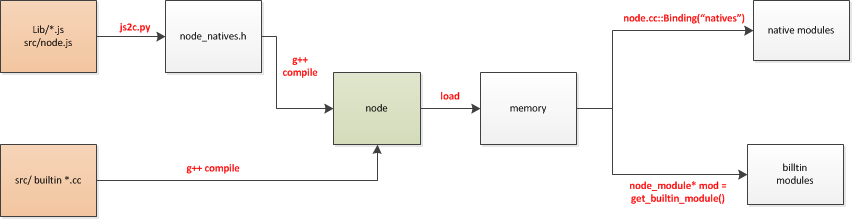

模块
If V8 is the engine of Node.js, npm is its soul!
npm世界最大的模块仓库，我们看几个数据：
- ~21万模块数量
- 每天亿级模块下载量
- 每周10亿级的模块下周量
由此诞生了一家做npm包管理的公司npmjs.com.
模块加载准备操作
严格来讲，Node里面分以下几种模块:
builtin module: Node中以c++形式提供的模块，如tcp_wrap、contextify等 constants module: Node中定义常量的模块，用来导出如signal, openssl库、文件访问权限等常量的定义。如文件访问权限中的O_RDONLY，O_CREAT、signal中的SIGHUP，SIGINT等。 native module: Node中以JavaScript形式提供的模块，如http,https,fs等。有些native module需要借助于builtin module实现背后的功能。如对于native模块buffer ,还是需要借助builtin node_buffer.cc中提供的功能来实现大容量内存申请和管理，目的是能够脱离V8内存大小使用限制。 3rd-party module: 以上模块可以统称Node内建模块，除此之外为第三方模块，典型的如express模块。
builtin module和native module生成过程

该文件由js2c.py生成。 js2c.py会将node源代码中的lib目录下所有js文件以及src目录下的node.js文件中每一个字符转换成对应的ASCII码，并存放在相应的数组里面。
namespace node {
const char node_native[] = {47, 47, 32, 67, 112 …}
const char console_native[] = {47, 47, 32, 67, 112 …}
const char buffer_native[] = {47, 47, 32, 67, 112 …}
…
}
struct _native { const char name; const char* source; size_t source_len;};
static const struct _native natives[] = {
{ “node”, node_native, sizeof(node_native)-1 },
{ “dgram”, dgram_native, sizeof(dgram_native)-1 },
{ “console”, console_native, sizeof(console_native)-1 },
{ “buffer”, buffer_native, sizeof(buffer_native)-1 },
…
}
builtin C++ module生成过程较为简单。每个builtin C++模块的入口，都会通过宏NODE_MODULE_CONTEXT_AWARE_BUILTIN扩展为一个函数。例如对于tcp_wrap模块而言，会被扩展为函数static void _register_tcp_wrap (void) attribute((constructor))。熟悉GCC的同学会知道通过attribute((constructor))修饰的函数会在node的main()函数之前被执行，也就是说，我们的builtin C++模块会被main()函数之前被加载进modlist_builtin链表。modlist_builtin是一个struct node_module类型的指针，以它为头，get_builtin_module()会遍历查找我们需要的模块。
对于node自身提供的模块，其实无论是native JS模块还是builtin C++模块，最终都在编译生成可执行文件时，嵌入到了ELF格式的二进制文件node里面。
- 而对这两者的提取方式却不一样。对于JS模块，使用process.binding(“natives”)，而对于C++模块则直接用get_builtin_module()得到，这部分会在1.2节讲述。
v8 binding
在node.cc里面提供了一个函数Binding()。当我们的应用或者node内建的模块调用require()来引用另一个模块时，背后的支撑者即是这里提到的Binding()函数。后面会讲述这个函数如何支撑require()的。这里先主要剖析这个函数。
static void Binding(const FunctionCallbackInfo<Value>& args) {
Environment* env = Environment::GetCurrent(args);
Local<String> module = args[0]->ToString(env->isolate());
node::Utf8Value module_v(env->isolate(), module);
Local<Object> cache = env->binding_cache_object();
Local<Object> exports;
if (cache->Has(module)) {
exports = cache->Get(module)->ToObject(env->isolate());
args.GetReturnValue().Set(exports);
return;
}
// Append a string to process.moduleLoadList
char buf[1024];
snprintf(buf, sizeof(buf), "Binding %s", *module_v);
Local<Array> modules = env->module_load_list_array();
uint32_t l = modules->Length();
modules->Set(l, OneByteString(env->isolate(), buf));
node_module* mod = get_builtin_module(*module_v);
if (mod != nullptr) {
exports = Object::New(env->isolate());
// Internal bindings don't have a "module" object, only exports.
CHECK_EQ(mod->nm_register_func, nullptr);
CHECK_NE(mod->nm_context_register_func, nullptr);
Local<Value> unused = Undefined(env->isolate());
// **for builtin module**
mod->nm_context_register_func(exports, unused,
env->context(), mod->nm_priv);
cache->Set(module, exports);
} else if (!strcmp(*module_v, "constants")) {
exports = Object::New(env->isolate());
// for constants
DefineConstants(exports);
cache->Set(module, exports);
} else if (!strcmp(*module_v, "natives")) {
exports = Object::New(env->isolate());
// for native module
DefineJavaScript(env, exports);
cache->Set(module, exports);
} else {
char errmsg[1024];
snprintf(errmsg,
sizeof(errmsg),
"No such module: %s",
*module_v);
return env->ThrowError(errmsg);
}
args.GetReturnValue().Set(exports);
}
builtin优先级最高。对于任何一个需要绑定的模块，都会优先到builtin模块列表modlist_builtin中去查找。查找过程非常简单，直接遍历这个列表，找到模块名字相同的那个模块即可。找到这个模块后，模块的注册函数会先被执行，且将一个重要的数据exports返回。对于builtin module而言，exports object包含了builtin C++模块暴露出来的接口名以及对于的代码。例如对模块tcp_wrap而言，exports包含的内容可以用如下格式表示： {“TCP”: “/function code of TCPWrap entrance/”, “TCPConnectWrap”: “/function code of TCPConnectWrap entrance/”}。
constants模块优先级次之。node中的常量定义通过constants导出。导出的exports格式如下: {“SIGHUP”:1, “SIGKILL”:9, “SSL_OP_ALL”: 0x80000BFFL}
对于native module而言，图3中除了数组node_native之外，所有的其它模块都会导出到exports。格式如下： {“_debugger”: _debugger_native , “module”: module_native ，“config”： config_native } 其中，_debugger_native，module_native等为数组名，或者说就是内存地址。
对比上面三类模块导出的exports结构会发现对于每个属性，它们的值代表着完全不同的意义。对于builtin 模块而言，exports的TCP属性值代表着函数代码入口，对于constants模块，SIGHUP的属性值则代表一个数字，而对于native模块，_debugger的属性值则代表内存地址（准确说应该是 .rodata段地址）。
模块加载
我们仍旧从var http = require('http');说起。
require是怎么来的，为什么平白无故就能用呢，实际上都干了些什么？
- lib/module.js的中有如下代码。
// Loads a module at the given file path. Returns that module's // `exports` property. Module.prototype.require = function(path) { assert(path, 'missing path'); assert(typeof path === 'string', 'path must be a string'); return Module._load(path, this); };
首先assert 模块进行简单的 path 变量的判断，需要传人的 path是一个 string 类型。
// Check the cache for the requested file.
// 1. If a module already exists in the cache: return its exports object.
// 2. If the module is native: call `NativeModule.require()` with the
// filename and return the result.
// 3. Otherwise, create a new module for the file and save it to the cache.
// Then have it load the file contents before returning its exports
// object.
Module._load = function(request, parent, isMain) {
if (parent) {
debug('Module._load REQUEST %s parent: %s', request, parent.id);
}
var filename = Module._resolveFilename(request, parent);
var cachedModule = Module._cache[filename];
if (cachedModule) {
return cachedModule.exports;
}
if (NativeModule.nonInternalExists(filename)) {
debug('load native module %s', request);
return NativeModule.require(filename);
}
var module = new Module(filename, parent);
if (isMain) {
process.mainModule = module;
module.id = '.';
}
Module._cache[filename] = module;
var hadException = true;
try {
module.load(filename);
hadException = false;
} finally {
if (hadException) {
delete Module._cache[filename];
}
}
return module.exports;
};
- 如果模块在缓存中，返回它的exports对象。
- 如果是原生的模块，通过调用
NativeModule.require()返回结果。 - 否则，创建一个新的模块，并保存到缓存中。
让我们再深度遍历的方式查看代码到NativeModule.require.
NativeModule.require = function(id) {
if (id == 'native_module') {
return NativeModule;
}
var cached = NativeModule.getCached(id);
if (cached) {
return cached.exports;
}
if (!NativeModule.exists(id)) {
throw new Error('No such native module ' + id);
}
process.moduleLoadList.push('NativeModule ' + id);
var nativeModule = new NativeModule(id);
nativeModule.cache();
nativeModule.compile();
return nativeModule.exports;
};
我们看到，缓存的策略这个贯穿在 node 的实现中。
- 同样的，如果在 cache 中存在，则直接返回 exports 对象。
- 如果不在，则加入到
moduleLoadList数组中，创建新的 NativeModule 对象。
下面是最关键的一句
nativeModule.compile();
具体实现在 node.js中：
NativeModule.getSource = function(id) {
return NativeModule._source[id];
};
NativeModule.wrap = function(script) {
return NativeModule.wrapper[0] + script + NativeModule.wrapper[1];
};
NativeModule.wrapper = [
'(function (exports, require, module, __filename, __dirname) { ',
'\n});'
];
NativeModule.prototype.compile = function() {
var source = NativeModule.getSource(this.id);
source = NativeModule.wrap(source);
var fn = runInThisContext(source, {
filename: this.filename,
lineOffset: 0
});
fn(this.exports, NativeModule.require, this, this.filename);
this.loaded = true;
};
wrap 函数将 http.js 包裹起来, 交由runInThisContext编译源码，返回fn函数, 依次将参数传人。
这样就成功加载了native模块, 标记 this.loaded = true;
process
先看看node.js的底层C++传递给javascript的一个变量process，在一开始运行node.js时，程序会先配置好process
Handleprocess = SetupProcessObject(argc, argv);
- 然后把process作为参数去调用js主程序src/node.js返回的函数，这样process就传递到javascript里了。
//node.cc
//通过MainSource()获取已转化的src/node.js源码，并执行它
Local f_value = ExecuteString(MainSource(), IMMUTABLE_STRING(“node.js”));
//执行src/node.js后获得的是一个函数，从node.js源码可以看出：
//node.js
//(function(process) {
// global = this;
// …
//})
Local f = Local::Cast(f_value);
//创建函数执行环境，调用函数，把process传入
Localglobal = v8::Context::GetCurrent()->Global();
Local args[1] = { Local::New(process) };
f->Call(global, 1, args);
vm
runInThisContext又是怎么一回事呢？
var ContextifyScript = process.binding('contextify').ContextifyScript;
function runInThisContext(code, options) {
var script = new ContextifyScript(code, options);
return script.runInThisContext();
}
- node.cc的Binding中有如下调用，对模块进行注册，
mod->nm_context_register_func(exports, unused, env->context(), mod->nm_priv);
我们看下 node.h中 mod 数据结构的定义：
struct node_module {
int nm_version;
unsigned int nm_flags;
void* nm_dso_handle;
const char* nm_filename;
node::addon_register_func nm_register_func;
node::addon_context_register_func nm_context_register_func;
const char* nm_modname;
void* nm_priv;
struct node_module* nm_link;
};
- node.h中还有如下宏定义，接着往下看！
#define NODE_MODULE_CONTEXT_AWARE_X(modname, regfunc, priv, flags) \
extern "C" { \
static node::node_module _module = \
{ \
NODE_MODULE_VERSION, \
flags, \
NULL, \
__FILE__, \
NULL, \
(node::addon_context_register_func) (regfunc), \
NODE_STRINGIFY(modname), \
priv, \
NULL \
}; \
NODE_C_CTOR(_register_ ## modname) { \
node_module_register(&_module); \
} \
}
#define NODE_MODULE_CONTEXT_AWARE_BUILTIN(modname, regfunc) \
NODE_MODULE_CONTEXT_AWARE_X(modname, regfunc, NULL, NM_F_BUILTIN) \
- node_contextify.cc中有如下宏调用，终于看清楚了！结合前面几点，实际上就是把node_module的nm_context_register_func与node::InitContextify进行了绑定。
NODE_MODULE_CONTEXT_AWARE_BUILTIN(contextify, node::InitContextify);
我们回溯而上，通过 node_module_register(&_module);,process.binding('contextify')--> mod->nm_context_register_func(exports, unused, env->context(), mod->nm_priv); --> node::InitContextify().
这样通过env->SetProtoMethod(script_tmpl, "runInThisContext", RunInThisContext);，绑定了『runInThisContext』 和 RunInThisContext.
总结
在实际的业务开发中，我们从堆的角度观察node启动模块后，缓存了大量的模块，包括第三份的模块，有的可能只加载使用一次。笔者觉得有必要有一种模块的卸载机制[1], 可以降低对 V8堆内存的占用，从而提升后续垃圾回收的效率。